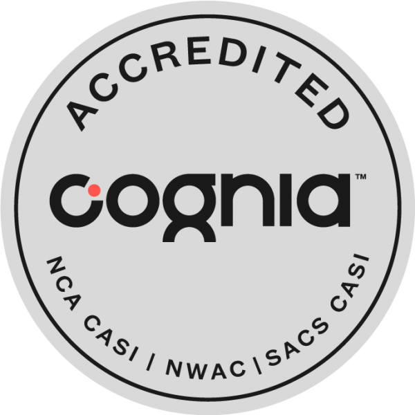

JAD
BOU NASSIF
Electrical Engineering Student
+961 71 351 282
Dawhet Aramoun, Choueifat El
Aamroussieh
- Programming: C, C#, MATLAB
- Embedded Systems: Arduino
- Simulation Tools: Simulink, Proteus
- Networking Basics
Enthusiastic and driven university student, Eager to apply
theoretical knowledge to real-world challenges in a dynamic
internship environment. Highly motivated to gain practical
experience in the field while contributing to innovative projects
and expanding technical skills. In addition to my technical
pursuits, I have a strong passion for weightlifting, which has
helped me develop discipline, perseverance, and a commitment to
continuous improvement. I also enjoy strategy games, where I apply
my problem-solving and analytical thinking skills to challenge
myself by solving problems and thinking ahead to outsmart opponents.
Lebanese University Faculty of Engineering
Amjad High School

CCNA: Introduction to Networks
(Download Certificate)
IEEE Web Development Course(Download Certificate)